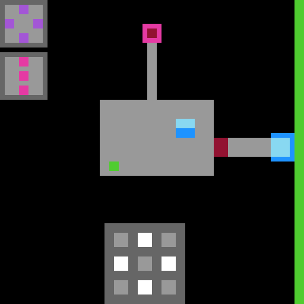

RESEARCH UPDATE / FOUR TRANSFORMATIONS & LIMITS
From learned concepts
to checkable structure.
Six sealed-level cases from two protocols. Read the recorded answers, inspect their Lean proofs, and see which budgets were reported during the initial run, reported in a follow-up, or converted by the operator.

Reference frame from the historical archive
Matching initial reports
d88673, 7a68d3, c4ef32Matching follow-up reports
646045 and 70b0a6Match after cost conversion
37bc5f: reported 37, converted to 36Source protocols
r3-observeprior and unified-METHOD01 / REPLICATION RECORD
Budget values and proof scopes
The reference minima are 19 for L4 and 36 for L5, measured as the initial budget with the winning move free. The table shows values on that scale and identifies how each was obtained. A numerical match and a proof about all legal engine actions are separate claims.
| CASE / PROTOCOL | COMPARISON VALUE | LEAN PROOF SCOPE |
|---|
02 / CASE SELECTION
All cases in two selected level groups
The two source batches contain nine eligible cases. This collection takes all three L4 cases from r3-observeprior and all three L5 cases from unified-METHOD. The other three eligible unified-METHOD cases are L4 (6d0313, a9b382, and 15e04c). They fall outside the selected level groups. Runs marked void in the source records are excluded from the batch counts.
The r3 L4 protocol sent observation reminders at qualifying round boundaries. The unified-METHOD L5 batch used its common METHOD instructions. Each case has eight initial attempt records and a final interview. The 37bc5f run resumed after an interruption in attempt six. The L4 reviews and the general-v4 follow-up for 70b0a6 stay with their original cases.
The six historical cases in the sealed-level archive are a separate earlier collection. The budget comparison here is descriptive for the six displayed cases. The two source protocols and the historical archive have separate denominators.
03 / PROOF SCOPE
What transfers from a model to the engine?
The archived Lean declarations certify statements about the learned models. Their action domains and premises are listed case by case. A transfer to the engine requires a correspondence between the initial states and between legal engine actions and model steps, including costs and terminal outcomes.
The replication operator reviewed the artifacts after the runs and separately investigated shared model repairs. That work was separate from the subjects’ original proofs and was performed by the operator, without third-party certification. The downloadable Lean files are the recorded case artifacts. The budget comparison and proof scopes on this page are tied to those records.